What this topic covers
This topic groups two kinds of signing that sit alongside the main families. The first is temporary signs used at road work sites (cantiere). The second is complementary devices that guide you along the road: delineators, curve markers, and obstacle markers. Neither replaces the standard sign families: they add to them, or, for work zones, they temporarily change what applies.
The US bridge: this is where the color swap lives. In the US, orange means construction. In Italy that job belongs to yellow: a temporary warning or information sign keeps the usual shape and symbol but swaps the white background for yellow. Do not read Italian yellow as the permanent-warning yellow of US diamonds. Italy's permanent warnings are white triangles, and its yellow is your orange.
What "complementary" means here. Segnali complementari are hardware standing along the road (delineator posts, curve chevrons, snow poles, tunnel and obstacle markers) that complete the signs and markings by physically tracing the road's course, which in US terms makes them delineators, object markers, and chevrons.
Watch the traps. A temporary sign overrides the matching permanent one where they conflict.
Temporary warning and routing signs
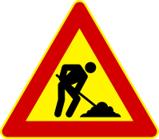
- The yellow triangle with the digging worker gives advance warning of road work: work sites, temporary stockpiles of material or machinery, people working on or beside the carriageway. It can carry a panel giving the length of the site. It is a warning. It imposes no yielding to work vehicles or workers.
- The temporary traffic-light triangle (three discs, the center one a flashing yellow light) announces work-zone signals, urban or extra-urban, typically before a narrowing controlled by alternating lights.
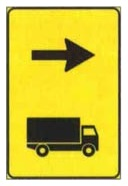
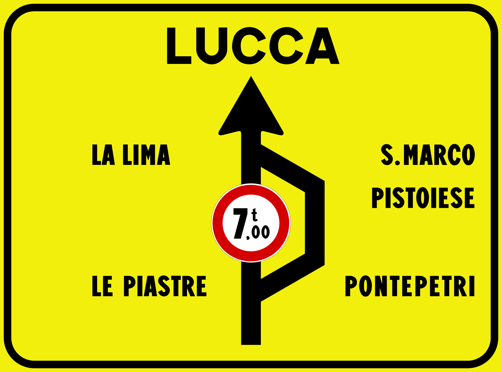
- The yellow advised-direction panel (arrow + truck) marks the recommended detour point for trucks over 3.5 t. It is a suggestion, never a ban on other turns. The yellow detour board (e.g. LUCCA with a 7 t disc) routes vehicles over 7 t actual mass bound that way around a work stretch: lighter vehicles may proceed straight, and either route is open to them; the limit is by mass, not length.
Lane panels at work zones
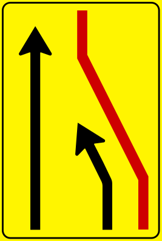
- The lane-closure panel (yellow, red merging arrow) shows which lane is closing and how to merge, e.g. from two lanes to one, right lane closed. It can carry a distance panel to the closure point. It does not authorize overtaking on the right and imposes no yielding to the right.
- The category lane-assignment panel tells each class which lane to use at the work zone, typically cars left, trucks over 3.5 t right only.
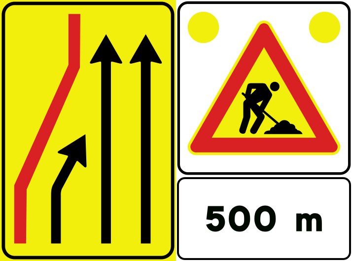
- The mobile work-zone composite (lane-shift panel + worker triangle + distance, often with flashing lights on top) can be mounted on a work vehicle that moves with the site.
Work-zone devices
Physical devices, mostly red and white, mark the zone itself.
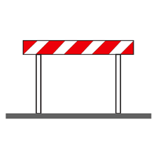
- Barriers (transenne) close off the area occupied by the site. Two further facts about barriers: a barrier can stand in for broken gates at a railroad crossing, and in poor visibility it can carry a steady red lamp.
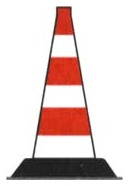
- Cones mark short-duration or moving work, temporary detours, accident areas, and temporary separation of traffic directions, but not long-term sites: a cone's job lasts at most a couple of days (resurfacing, painting lines), never a ten-day site.
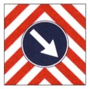
- The work-vehicle panel (a board of red-and-white diagonal stripes, with a blue disc whose arrow says which side to pass on) is mounted on maintenance vehicles that are stopped or moving slowly; the arrow tells you which side to pass them on.
Delineators (complementary signs)
Delineators mark the edge and course of the road, especially where visibility is poor. They are reflective, useful by day too, and never lit by their own light. They never divide the carriageway into lanes. They are spaced at close, variable intervals that tighten in curves, so several are always in view. There is no minimum such as "100 m apart".
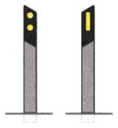
- Edge delineators for a one-way road. These posts carry yellow reflectors, and the two sides differ: the post on your left shows two yellow dots, the post on your right a single yellow bar, as in the figure. They stand at the outer edge of the shoulder on both sides of a one-way road or carriageway, never in the center, to show the road's course from a distance; they do not divide the carriageway into lanes and are not placed before a crosswalk or to mark a parking area. Where a post cannot stand, a reflector fixed to a wall or barrier does the job. These yellow ones are not used on a two-way road.
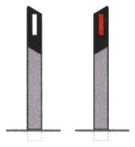
- Edge delineators for a two-way road. Same job and same placement at the outer edge of the shoulder, but the reflectors are red on your right and white on your left, so at night the colors tell you which edge is which and where the oncoming traffic is. They are useful above all in poor visibility, by day as well as by night, and are set at close, variable intervals, closer in curves, with no minimum spacing (never "at least 100 m"). Where a post cannot stand, a red or white reflector fixed to a wall or barrier replaces it. These are not the delineators of a one-way road.
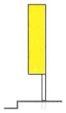
- The tunnel delineator (tall yellow rectangle) lines the walls of one-way tunnels, and also marks detours and narrowings. A two-way tunnel has no delineator of its own. Its walls carry white delineators on the left and red on the right, the same colors as the two-way road delineators shown above.
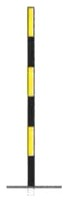
- The snow-country delineator (black-and-yellow bands) lines mountain roads subject to snow, keeping the edges visible when the road is white. It is tall for that reason, and it can stand together with a guardrail: it does not replace one, and it is not reserved for roads without barriers.
Curve and obstacle markers
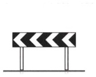
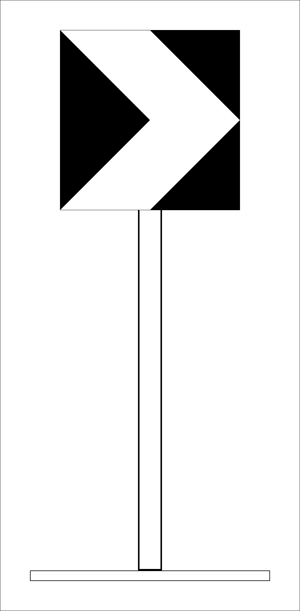
- The chevron panel (white arrowheads on black) sits in the sharp bend itself, not 150 m (165 yd) before it, and may be preceded by the DANGEROUS BEND warning sign, pointing the way the road turns. Read the direction: chevrons pointing left mean a left bend. Single elements are used in series along the curve. In white and red, the same marker signals a temporary bend (a work-zone deviation).
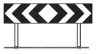
- The double-direction chevron barrier stands at a T-junction, where there is no way straight ahead. Turn left or right. In white and red it too is a temporary work-zone version.
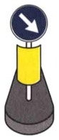
- The obstacle delineator (bollard with a blue pass-this-side disc, often on a flexible base) stands on the carriageway at the obstacle, for example at the start of a traffic island, and shows which side to pass. It is always paired with the mandatory-passage or allowed-passages sign, is fully reflective, and has no light of its own.
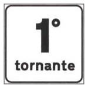
- The hairpin panel ("1° tornante") counts the hairpins of a mountain climb: it marks this hairpin's number, not a distance to anything. The raised ° is the Italian ordinal mark, so 1° is 1st and 2° is 2nd, and it does not mean degrees.
How to behave at a work zone
- Slow down and follow the temporary signs and lane arrows, even when they contradict the permanent signs or the painted markings.
- Expect narrowed or shifted lanes, reduced limits, and people or machinery close to traffic. Be ready to stop.
- Keep clear of the cones and barriers. They mark space you may not enter.
Summary of key points
- A yellow background means a temporary, work-zone sign. Italy's yellow is the US's orange. Shape and meaning stay the same, and the temporary sign overrides its permanent counterpart.
- Work-zone advisory signs (truck routes) recommend; the detour board's 7 t is an actual-mass limit. Lighter vehicles may go straight.
- Among the lane panels, the red merging arrow means a lane is closed, the category panels assign lanes, with trucks on the right, and the composite version rides on a work vehicle.
- Barriers (also for broken crossing gates, with a steady red lamp in fog) and cones (short jobs only) mark the zone; the chevron panel on a work vehicle says which side to pass.
- Delineators mark the edge and the course of the road; they are reflective, never self-lit and never lane dividers, and they come in versions for one-way roads, two-way roads, one-way tunnels, and snowy mountain roads.
- Chevrons sit in the bend itself and point its way, and in white and red they are temporary; the double version marks a T-junction; the obstacle bollard stands on the carriageway and shows the passing side; the hairpin panel is a counter.